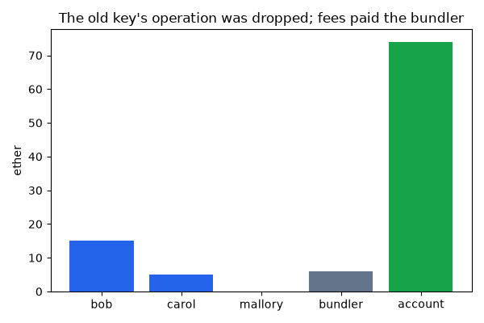

Note
Go to the end to download the full example code or to run this example in your browser via JupyterLite.
Account abstraction with ERC-4337 (2021)#
An Ethereum key-pair account can start transactions but follows fixed rules: one ECDSA key, gas paid in ether. A contract account can follow any rule but cannot start a transaction. ERC-4337, proposed in 2021 by Vitalik Buterin, Yoav Weiss and others and deployed in 2023, lets contract accounts act on their own without a protocol change. Owners sign user operations; a bundler submits them to an EntryPoint contract, which asks each account to validate its operation and pay its fee, then runs it. The owner signs
so an operation cannot be replayed elsewhere. Because validation is code, the owner can rotate the key, batch payments, or plug in social recovery.
import matplotlib.pyplot as plt
import blockchainkit as bk
A smart account, a bundler, and a key rotation#
world = bk.contracts.World()
entry = world.deploy("deployer", bk.wallets.EntryPoint, name="EntryPoint")
account = world.deploy("deployer", bk.wallets.SmartAccount, entry, bk.crypto.public_key(7))
world.fund("alice", 100)
world.transact("alice", account, value=100)
def operation(nonce, function, *args, key=7, fee=2):
op = bk.wallets.UserOperation(account, nonce, function, args, fee)
return bk.wallets.sign_user_operation(op, key, entry)
ops = [
operation(0, "execute", "bob", 10),
operation(1, "rotate_owner", bk.crypto.public_key(11)),
]
receipt = world.transact("bundler", entry, "handle_ops", ops, "bundler")
print("bundle:", receipt.success, receipt.result, "bundler earned", world.balance("bundler"))
stale = operation(2, "execute", "mallory", 50) # Signed with the old key.
fresh = operation(2, "execute_batch", [("bob", 5), ("carol", 5)], key=11)
kept = bk.wallets.bundle(world, entry, [stale, fresh])
print("bundler keeps", len(kept), "of 2 operations")
assert kept == (fresh,)
receipt = world.transact("bundler", entry, "handle_ops", kept, "bundler")
assert receipt.result == (True,)
# An operation that would only revert in validation never reaches the chain:
# included anyway, it would revert the bundle at the bundler's expense.
assert not world.transact("bundler", entry, "handle_ops", [stale], "bundler").success
bundle: True (True, True) bundler earned 4
bundler keeps 1 of 2 operations
Where the ether went#
holders = ["bob", "carol", "mallory", "bundler", account]
balances = [world.balance(h) for h in holders]
print(dict(zip(["bob", "carol", "mallory", "bundler", "account"], balances, strict=True)))
assert world.balance("mallory") == 0 and world.balance("bundler") == 6
fig, ax = plt.subplots(figsize=(6, 4))
ax.bar(
["bob", "carol", "mallory", "bundler", "account"],
balances,
color=["#2563eb", "#2563eb", "#dc2626", "#64748b", "#16a34a"],
)
ax.set(ylabel="ether")
ax.set_title("The old key's operation was dropped; fees paid the bundler")
fig.tight_layout()
plt.show()

{'bob': 15, 'carol': 5, 'mallory': 0, 'bundler': 6, 'account': 74}
Exercise#
Sign an operation for another chain ID and submit it. Which check stops it, and why must the EntryPoint’s address be in the hash too? A worked solution is in Exercises: wallets.
Total running time of the script: (0 minutes 0.156 seconds)